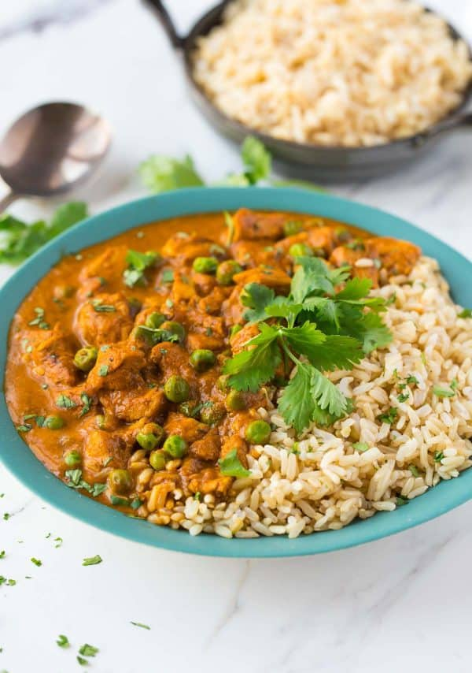

Chicken Masala
Back to Home
***DISCLAIMER - THIS IS NOT MY RECIPE***
Navigate to WellPlated.com to find this excellent recipe for Instant Pot Chicken Masala
***END DISCLAIMER***

Description
Instant Pot Chicken Tikka Masala. A healthy, easy version of authentic Indian chicken tikka masala made quick in the pressure cooker. Not too spicy, ultra creamy, filled with flavor, and great leftover too!
Ingredients
- 2 pounds boneless skinless chicken breasts cut into bite-size pieces
- 1 1/2 teaspoons kosher salt divided
- 1 tablespoon unsalted butter or coconut oil, ghee, or extra-virgin olive oil...I do think the butter is worth it here!
- 1 small yellow onion finely chopped
- 3 large cloves garlic minced (about 1 tablespoon)
- 1 tablespoon minced fresh ginger
- 1 tablespoon garam masala
- 1 teaspoon ground chili powder
- 1 teaspoon ground cumin
- 1 teaspoon ground turmeric
- 1/4 teaspoon ground cayenne use more if you like the dish spicy
- 1 can no salt added tomato sauce (8 ounces)
- 1 can light coconut milk (14 ounces)
- 3/4 cup frozen peas
- 1/2 cup plain nonfat Greek yogurt
- Prepared brown rice or naan, for serving
- Fresh cilantro for serving
Instructions
- Season the chicken with 1 teaspoon kosher salt and set aside.
- Add the butter to an Instant Pot and set to SAUTE. Once melted, add the onion, garlic, ginger, garam masala, chili powder, cumin, turmeric, and cayenne. Cook, stirring often, until the onion is soft and the spices are very fragrant, about 5 minutes.
- Add the chicken pieces, stir to coat with the spices and onion, and cook, stirring often, just until the outsides start to brown, about 4 minutes. Add the tomato sauce and remaining 1/2 teaspoon salt. Stir to combine. Cover and cook on HIGH pressure for 8 minutes. Vent to immediately release the pressure.
- Uncover and stir in the coconut milk. Turn the Instant Pot back to SAUTE. Bring the mixture to a simmer, stirring occasionally, and let it continue to simmer until the sauce thickens slightly, about 10 to 15 minutes. Turn the Instant Pot off, and then stir in the peas. Let cool for 3 to 4 minutes, and then stir in the Greek yogurt (do not stir in the Greek yogurt right away or it may curdle). Enjoy warm with rice or naan and a sprinkle of fresh cilantro.
Notes
- Garam masala is a blend of many spices and is very important to the final flavor of the recipe. It is available in most grocery stores and can also be found online here.
- Instant Pot Brown Rice: I've been playing around, and so far my favorite ratio is 1 cup long-grain brown rice to 1 1/4 cups water. Stir the two together, add a pinch of kosher salt, and cook on high pressure for 22 minutes. Let the pressure release naturally for 15 minutes. PERFECT. (Please note, this applies to long-grain brown rice only. Other rice types may have different cook times and liquid ratios.)
- Instant Pot Brown Rice: I've been playing around, and so far my favorite ratio is 1 cup long-grain brown rice to 1 1/4 cups water. Stir the two together, add a pinch of kosher salt, and cook on high pressure for 22 minutes. Let the pressure release naturally for 15 minutes. PERFECT. (Please note, this applies to long-grain brown rice only. Other rice types may have different cook times and liquid ratios.)
- TO STORE: Store chicken tikka masala in an airtight storage container in the refrigerator for up to 5 days.
- TO REHEAT: Gently reheat leftovers in a large pot on the stovetop over medium-low heat until hot. You can also reheat this dish in the microwave in a microwave-safe bowl until warmed through.
- TO FREEZE: Place cooked and cooled leftovers in an airtight freezer-safe storage container and store in the freezer for up to 3 months. Let thaw overnight in the refrigerator before reheating. The texture will become slightly grainy, but it will still be tasty.
- TO MAKE DAIRY FREE: Use coconut or olive oil in place of the butter; replace the Greek yogurt with a non-dairy yogurt, such as coconut milk yogurt.
- TO MAKE IN THE SLOW COOKER: Follow step 1 as written. Melt the butter in a large skillet or dutch oven over medium-high heat and continue with steps 2 and 3. After browning the chicken pieces, transfer the contents of the skillet to your slow cooker and add the tomato sauce and salt. Stir to combine, cover, and cook on high for 3 to 4 hours or low for 6 to 8 hours. When the chicken is done, stir in the coconut milk and frozen peas. Let cool for 3 to 4 minutes, and then stir in the Greek yogurt. (Note that the sauce may be a thinner consistency when made in the slow cooker.)
***DISCLAIMER - THIS IS NOT MY RECIPE***
Navigate to WellPlated.com to find this excellent recipe for Instant Pot Chicken Masala
***END DISCLAIMER***
Back to Home